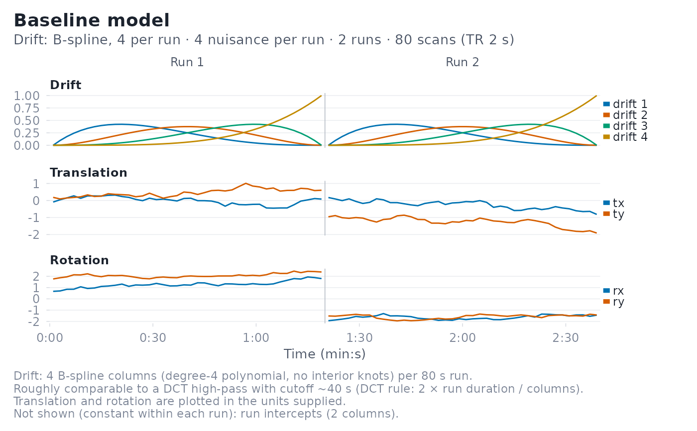
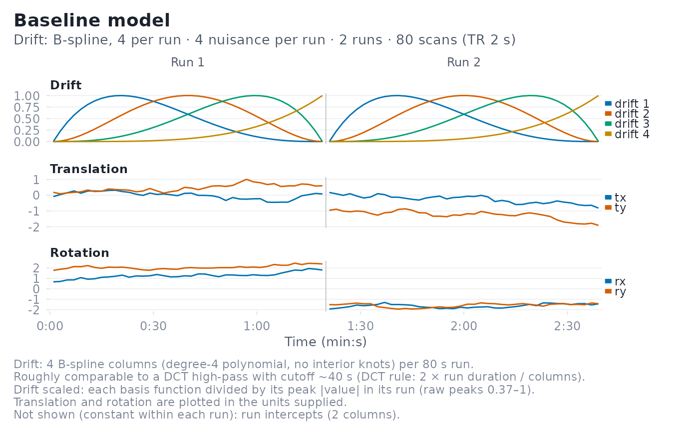
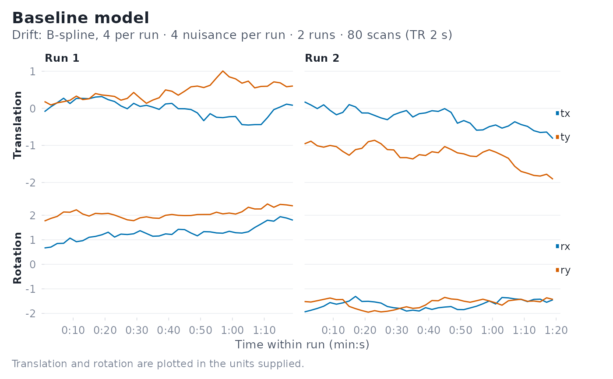

Draws every time-varying term of a baseline (nuisance) model on a shared time axis: one panel per term, with thin rules at run boundaries and run labels along the top. Lines never connect across run boundaries.
Arguments
- x
A
baseline_modelobject.- term_name
Optional name of a single term to plot (one of
names(terms(x)), e.g."drift","block"or"nuisance"). An exact match is used if there is one; otherwise a unique case-insensitive partial match. Constant terms can be requested this way. IfNULL(the default), all non-constant terms are drawn.- title
Plot title. Defaults to
"Baseline model".- xlab
Label for the x-axis. Defaults to a time label with units.
- ylab
Label for the y-axis. By default
"Regressor value", or no y title when motion parameters are split into translation and rotation panels (their units differ; the panel titles name them).- line_size
Line width in mm (default
0.5).- color_palette
Ignored; retained for backward compatibility. Colours follow the package palette (see
fmridesign_palette()).- block_x
How to lay out runs on the x-axis:
"global"(default) concatenates runs on one time axis;"run"gives each run its own column of panels with run-relative time.- drift_scale
"raw"(default) plots drift columns as they enter the design matrix."unit"divides each drift column by its peak absolute value within its run so basis shapes can be compared; the caption then reports the raw peaks and flags near-flat columns.- subtitle
Plot subtitle. Defaults to a summary of the model (drift basis and size, nuisance regressors per run, runs, scans and TR).
- ...
Additional arguments passed to
ggplot2::geom_line().
Details
Drift basis functions share one ordered colour ramp (darkest = first basis
function), so a basis function keeps its colour in every run. Nuisance
regressors keep the column names you supplied. When those names look like
rigid-body motion parameters (tx/ty/tz and rx/ry/rz,
trans_x/rot_x, x/y/z and pitch/roll/yaw), translations and
rotations get separate panels, because they are usually in different units
and rotations look flat on a shared axis. Each panel carries a key at its
right edge in column order; panels with more than 7 series use a legend
instead.
Terms that are constant within every run (run intercepts, a global
intercept, a constant drift basis) carry no time course and are left out;
the caption lists what was omitted. Request one explicitly with
term_name to draw it anyway. For spline and polynomial drift the caption
also gives a rough equivalent high-pass period, 2 * run duration / k for
k drift columns per run (the cutoff a discrete cosine basis with k
regressors would have); treat it as a guide, not an exact filter.
Examples
sframe <- fmrihrf::sampling_frame(blocklens = c(40, 40), TR = 2)
nuis <- lapply(1:2, function(r) {
m <- matrix(cumsum(rnorm(160, sd = 0.1)), 40, 4)
colnames(m) <- c("tx", "ty", "rx", "ry")
m
})
bmod <- baseline_model(basis = "bs", degree = 4, sframe = sframe,
nuisance_list = nuis)
plot(bmod)

plot(bmod, drift_scale = "unit")

plot(bmod, term_name = "nuisance", block_x = "run")
